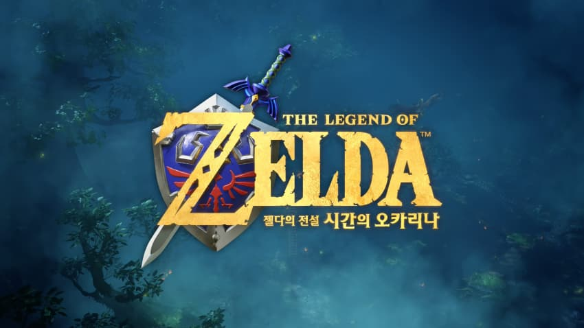
최근에 출시 되었던 대망의 메타 96점 젤다의전설 시간의 오카리나
너무 상징적인 수준의 고득점을 받은 게임이라 후기를 써도 되려나 고민 많이 했는데
어차피 후기 남겨놓는게 뭐 대수라고 가능한 스포일러 없는 선에서 그냥 썼어
플레이하면서 느낀 한줄평은
교과서
물론 장점이든 단점이든 전부
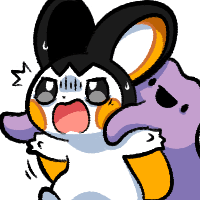
1. 필드
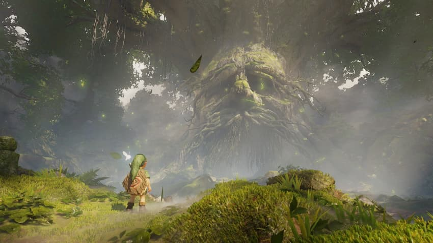
오픈월드가 아닌 어드벤처 게임이니만큼 불필요한 구성이 거의 없어
특히나 이 부분은 나름 극찬을 받을만한게 단순 현상 유지만 있는게 아닌
자유 시점과 자유 점프로 훨신 쾌적한 모험이 가능해졌고
그만큼 시각적 정보도 간결하게 가다듬어서 불편했던 부분을 상당부분 개선했어
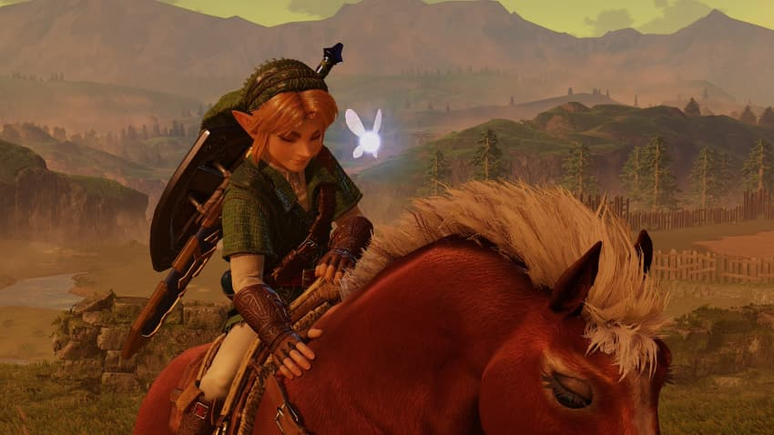
대신 이야기가 어느정도 진행되기 전까진 두 발로 뛰어다녀야 한다는건 여전히 불편하긴해
게임에 몰입하기 위해 불필요한 부분은 가능한 배제하고
그 외의 편의성 부분은 감성을 해치지 않도록 여전히 타협이 없어
2. 퍼즐
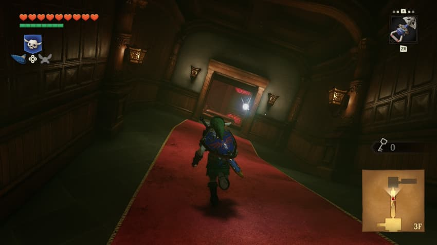
이 부분은 명불허전
퍼즐 어드벤처의 시초라는 명성에 걸맞게 엄청난 완성도를 자랑해
완성도라는게 단순히 퍼즐의 풀이만을 말하는게 아닌
그 과정에서 유저가 어떻게 해석하고 풀어 나가는지에 대한 직관성 까지
하나의 연출도 불필요한 맥락 없이 자연스레 퍼즐과 연계되는 점이 인상적이야
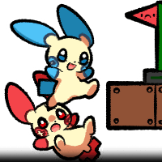
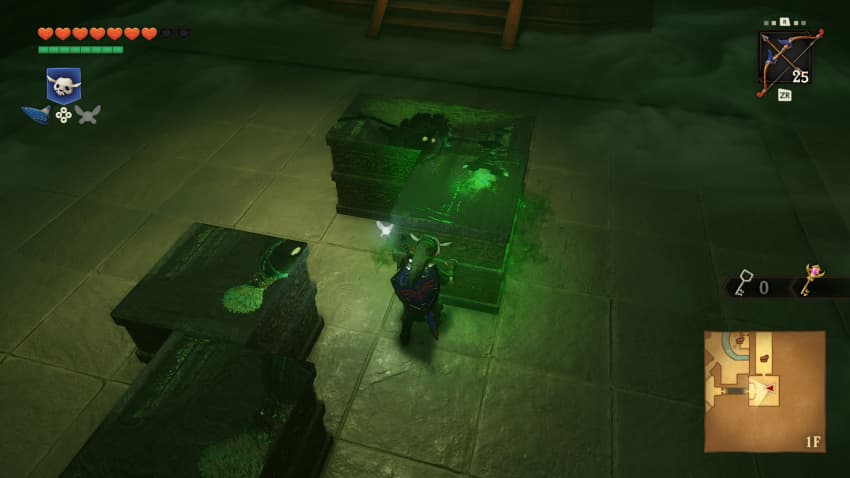
하지만 완성도가 마냥 뛰어나다 해서 그게 재미와 직결되는 경험인가에 대해선 잘 모르겠어
좀 직설적으로 말하면 새로운 호기심을 유도할 만큼의 특별한 독창성은 없거든
물론 20세기 기준으로 보면 혁신이겠지만 지금은 21세기 2026년이잖아
지금까지 젤다를 기반으로 수많은 퍼즐, 액션 어드벤쳐 게임들이 출시되었고
우리는 이미 수많은 게임을 통해서 이런 젤다의 기초 문법을 단락적으로나마 접했었어
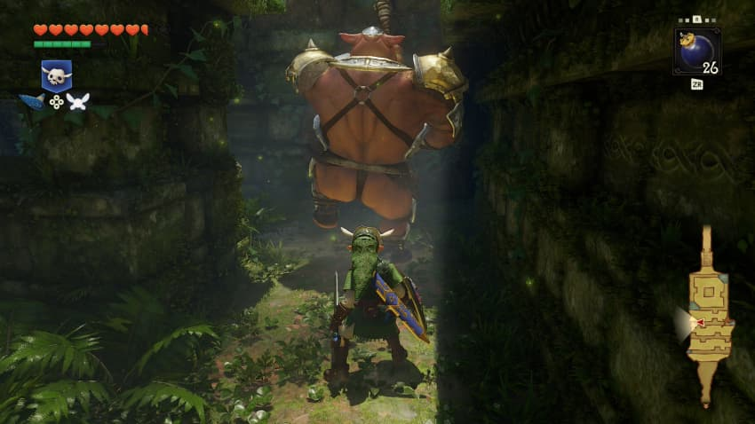
여기서 가장 아쉬운 부분이 드러나
각 몬스터마다 자연스레 약점을 유도 할 수 있도록 여러 기믹들의 선행 교육과 직관적인 연출로 가이드라인을 깔아주거든
하지만 반대로 너무 직관성이 뛰어난 만큼 시행착오를 통한 탐구의 재미가 빈약해
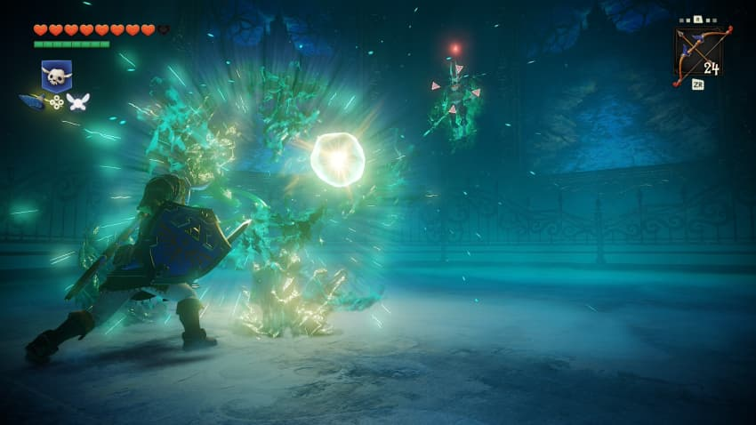
각 보스마다 다양한 연과 상호작용을 보는 재미는 있으나
대부분이 기믹성 전투고 그 기믹또한 굉장히 손쉽게 간파되는 구조라 긴장감을 느낄 일이 거의 없어
나쁘게 표현하자면 좀 지루하게 느껴질만큼
내가 하고있는건 그냥 문제의 모든 풀이 과정을 보고서 마지막 정답만을 적어 놓는 것뿐이야
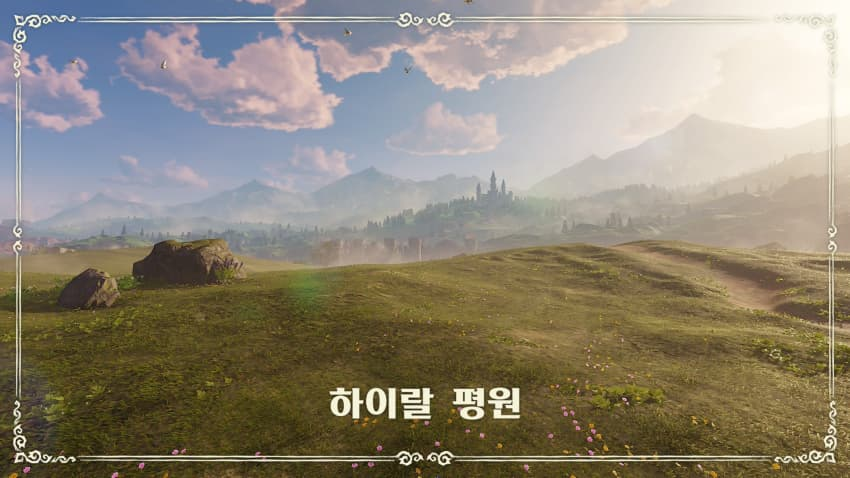
스토리는 고전작의 리메이크답게 전형적인 왕도물
대신 리메이크 하면서 여러 연출과 대사들을 더 보강해놨어
왕도물에서 필요한 건 결국 설득력인데 이 부분은 위의 개선으로 훨씬 괜찮아
뭐 굳이 더 걸고 넘어질만한 부분이 없는 스탠다드 그 자체야
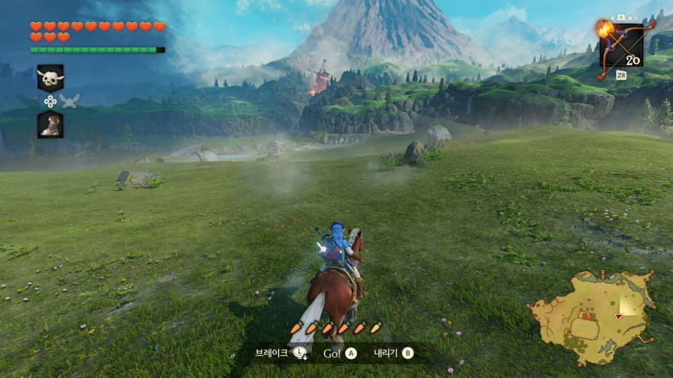
이 게임에서 고평가할 만한 부분은 스토리보단 세계의 상호작용이야
시간의 흐름에 따른 npc들의 행동 패턴과
과거와 미래를 오가면서 내가 어떤식으로 세계에 변화를 주는지
실시간으로 반영되는게 30년 전 게임이 맞나 싶을만큼 세련되어있어
5. 퀄리티
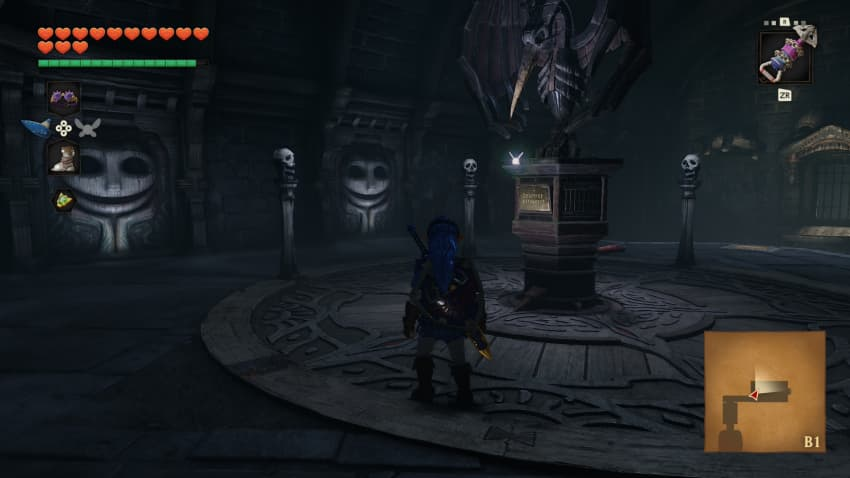
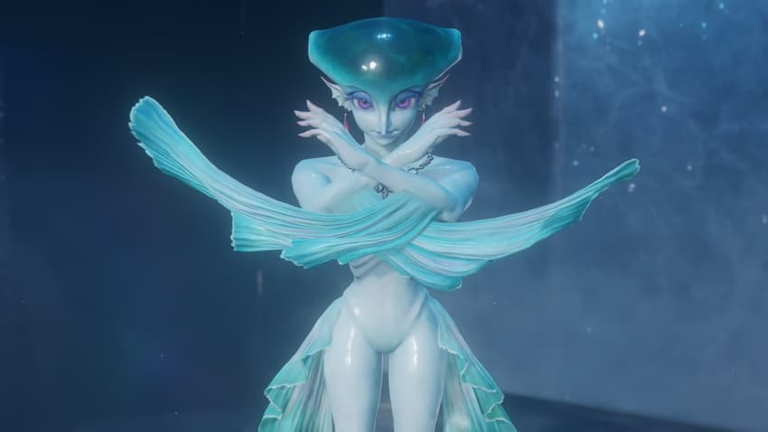
이거는 이견 없이 스위치 최고점
대체 최적화 어떻게 한건가 싶을만큼 신기할정도더라
물론 그래픽 말고도 오케스트라 BGM과 디테일한 연출까지 더할 나위 없을 만큼 좋아
아마 원작이나 3ds 버전을 한번이라도 해본 사람이라면 감동마저 느껴질 정도로
6. 정리
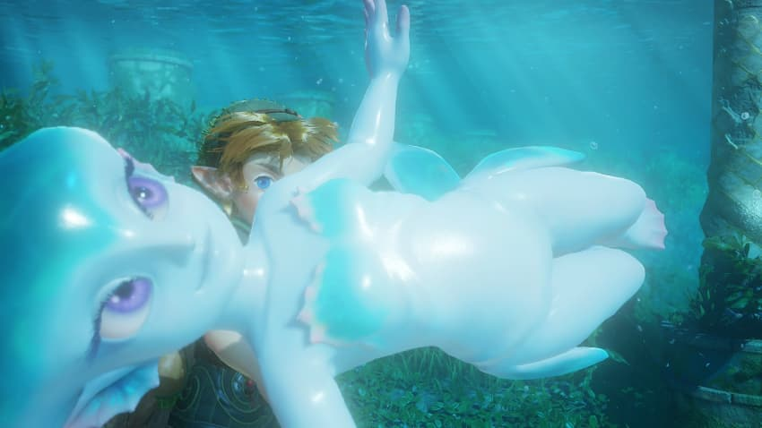
내 개인적 평가로는 오랜만에 정말 좋은 게임을 접했지만
솔직히 말해 지루한 구간이 적진 않았어
지금에 와선 클리셰 그 자체가 되어버린 게임의 리메이크인 만큼 새로운 자극이 거의 없다시피 했거든
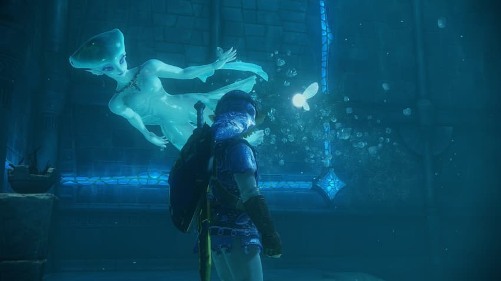
아마 이 게임에 대한 평가를 얘기하면 결국 가장 충돌하게 될 부분이 평론가들의 점수가 아닐까 싶은데
한 장르의 기반을 닦아 놓은 상징적인 작품으로 본다면 이견은 없지만
전통성을 무시하고서 이 패키지 게임 하나만 평가한다면
필요 이상의 기대감을 갖게 만드는 과한 평가가 아니었을까 싶어
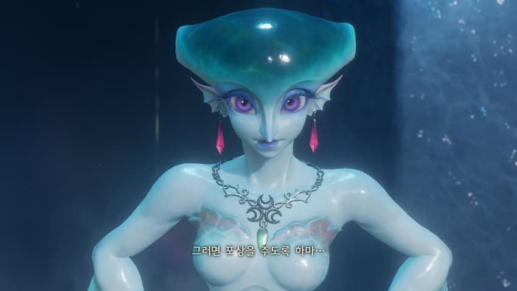
댓글
수집 당시 댓글 132개
· 도라지새콤무침 · 11.08 00:53:51
ㅇㅇ · 11.08 00:54:26
· ㅇㅇ · 11.08 00:57:20
· ㅇㅇ · 11.08 01:24:03
· ㅇㅇ · 11.08 13:16:49
ㅇㅇ · 11.08 00:57:21
화롯불 · 11.08 00:57:25
캬루 · 11.08 00:57:54
서벌먕먕이 · 11.08 00:58:40
nyasper · 11.08 01:01:13
ㅇㅇ · 11.08 01:03:33
ㅇㅇ · 11.08 01:06:33
니나혀
ㅇㅇ · 11.08 01:13:26
BrokeN · 11.08 01:24:36
ㅇㅇ · 11.08 01:33:55
ㅇㅇ · 11.08 01:38:10
ㅇㅇ · 11.08 01:42:09
· ㅇㅇ · 11.08 01:48:58
카붕이 · 11.08 01:42:48
ㅇㅇ · 11.08 01:47:01
ㅇㅇ · 11.08 01:48:02
ㅇㅇ · 11.08 01:51:06
ㅇㅇ · 11.08 01:53:20
ㅇㅇ · 11.08 01:58:55
ㅇㅇ · 11.08 02:25:07
ㅇㅇ · 11.08 02:30:44
ㅇㅇ · 11.08 02:40:24
ㅇㅇ · 11.08 03:08:55
ㅇㅇ · 11.08 03:35:25
ㅇㅇ · 11.08 05:38:51
· ㅇㅇ · 11.08 08:33:16
· ㅇㅇ · 11.08 11:00:39
· ㅇㅇ · 11.08 11:01:07
· ㅇㅇ · 11.08 14:17:45
패배를 인정하우?
ㅇㅇ · 11.08 08:03:29
ㅇㅇ · 11.08 08:11:16
· ㅇㅇ · 11.08 10:57:41
Adriel · 11.08 10:11:27
· Enter · 11.08 11:07:11
· Adriel · 11.08 11:09:10
ㅇㅇ · 11.08 10:38:17
ㅇㅇ · 11.08 11:12:26
· ㅇㅇ · 11.08 11:50:05
· 도라지새콤무침 · 11.08 12:25:18
· ㅇㅇ · 11.08 12:40:03
ㅇㅇ · 11.08 12:00:56
· ㅇㅇ · 11.08 14:17:28
패배를 인정하우?
· ㅇㅇ · 11.08 23:53:08
ㅇㅇ · 11.08 12:11:28
ㅇㅇ · 11.08 12:52:04
ㅇㅇ · 11.08 14:12:37
오호통재라 · 11.08 15:42:09
ㅇㅇ · 11.08 17:17:10
ㅇㅇ · 11.08 17:18:31
· 도라지새콤무침 · 11.08 18:26:12
· ㅇㅇ · 11.08 21:24:24
· ㅇㅇ · 11.09 01:12:51
· ㅇㅇ · 11.09 01:31:19
노알라 · 11.08 19:32:47
땨뗘(봇) · 11.09 01:10:06
암타황제강시현 · 11.09 01:11:41
· かなたん · 11.09 01:15:33
ㅇㅇ · 11.09 01:13:50
ㅇㅇ · 11.09 01:14:37
かなたん · 11.09 01:15:05
· 암타황제강시현 · 11.09 01:15:57
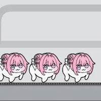
restinpieceofcake · 11.09 01:15:14
ㅇㅇ · 11.09 01:15:16
실비치노 · 11.09 01:16:08
ㅇㅇ · 11.09 01:16:54
· ㅇㅇ · 11.09 01:52:59
ㅇㅇ · 11.09 01:17:58
1 · 11.09 01:19:05
토라만 · 11.09 01:20:04
ㅇㅇ · 11.09 01:20:07
ㅇㅇ · 11.09 01:21:26
ㅇㅇ · 11.09 01:23:39
케떡 · 11.09 01:23:44
· ㅇㅇ · 11.09 01:30:03
ㅇㅇ · 11.09 01:30:15
키나루디안마기 · 11.09 01:38:41
ㅇㅇ · 11.09 01:39:03
ㅇㅇ · 11.09 01:41:19
· ㅇㅇ · 11.09 01:42:21
ㅇㅇ · 11.09 01:46:20
ㅇㅇ · 11.09 01:50:30
험버 · 11.09 01:52:08
ㅇㅇ · 11.09 01:59:07
린잘알 · 11.09 01:59:35
· ㅇㅇ · 11.09 02:02:05
· 린잘알 · 11.09 02:04:40
· ㅇㅇㅇ · 11.09 05:15:30
ㅇㅇ · 11.09 02:02:03
· ㅇㅇ · 11.09 02:05:40
· ㅇㅇ · 11.09 09:57:37
ㅇㅇ · 11.09 02:26:54
ㅇㅇ · 11.09 03:52:17
ㅇㅇ · 11.09 04:05:11
ㅇㅇ · 11.09 04:41:25
ㅇㅇ · 11.09 08:01:32
ㅇㅇ · 11.08 00:26:32
· 도라지새콤무침 · 11.08 00:27:06
밐다 · 11.08 00:27:33
· 도라지새콤무침 · 11.08 00:29:11
슬퍼 · 11.08 00:27:45
· 도라지새콤무침 · 11.08 00:29:15
ㅇㅇ · 11.08 00:28:25
· 도라지새콤무침 · 11.08 00:29:26
· EREN · 11.08 11:31:52
ㅇㅇ · 11.08 00:30:04
· 도라지새콤무침 · 11.08 00:30:46
ㅇㅇ · 11.08 00:31:59
· 도라지새콤무침 · 11.08 00:32:40
ㅇㅇ · 11.08 00:38:19
ㅇㅇ · 11.08 00:43:56
· 도라지새콤무침 · 11.08 00:48:05
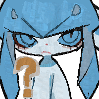
ㅇㅇ · 11.08 00:44:11
· 도라지새콤무침 · 11.08 00:48:16
락사스 · 11.08 00:44:33
· 도라지새콤무침 · 11.08 00:48:29
ㅇㅇ · 11.08 00:44:34
· 도라지새콤무침 · 11.08 00:49:40
· 락사스 · 11.08 00:49:59
· ㅇㅇ · 11.08 02:01:01
· Schmuserkadser · 11.08 02:43:54
· ㅇㅇ · 11.08 10:34:55
· ㅇㅇ · 11.08 11:57:51
· ㅇㅇ · 11.08 17:35:47
· ㅇㅇ · 11.09 01:58:21
ㅇㅇ · 11.08 00:49:30
· 도라지새콤무침 · 11.08 00:53:06
ㅇㅇ · 11.08 00:52:31